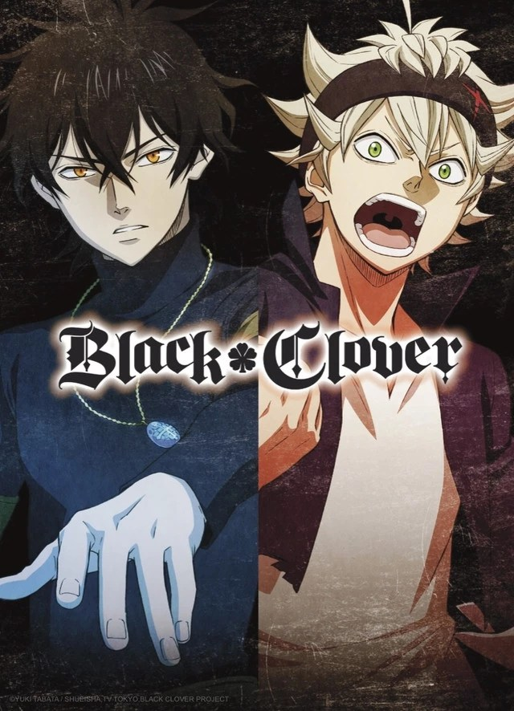

Black Clover

Black Clover conta a história de Asta e Yuno, dois órfãos que foram abandonados ainda bebês, no mesmo dia, na porta de uma igreja na Vila Hage.
O enredo se desenvolve em um universo completamente permeado pela magia, todos os habitantes possuem magia, menos um de nossos personagens principais, Asta. Já Yuno demonstra ter uma magia forte e talento natural.
Ambos cresceram juntos e possuem o mesmo objetivo: um dia se tornarem o maior mago de todos, o Rei Mago.
Quando completam 15 anos todas as crianças do reino participam de uma cerimônia onde receberão seus Grimórios. Yuno recebe um Grimório lendário, com trevo de quatro folhas na capa, já Asta… bem nosso persistente herói não recebe grimório algum, mas ainda assim ele não desiste de seu sonho.
O anime teve seu primeiro episódio disponibilizado em outubro de 2017 e continua sendo exibido até os dias de hoje, são atualmente 109 episódios de mais ou menos 23 minutos de duração.
É um trabalho do Studio Pierrot, que tem outros animes como Paradise Kiss, Naruto Shippuuden, Tokyo Ghoul e Bleach no catálogo.

Normalmente as histórias japonesas tem alguma lição ou ensinamento. Algumas histórias são mais profundas, outras mais leves. Black Clover é uma série mais leve sem grandes ensinamentos ou sacadas filosóficas. Apenas o suficiente para nos lembrarmos do valor da amizade, da persistência e da autoestima saudável para a realização de nossos sonhos
Asta é aquele personagem otimista, onde não tem tempo ruim. Em meio as mais diversas adversidades ele não esmorece, não se deprime. Nunca desiste, persistência é seu lema. Considera seus companheiros como sua família e é extremamente leal. Único ponto negativo do personagem é ser realmente muito barulhento, pelo menos para mim, isso foi motivo de quase desistir do anime nos primeiros episódios.
link para mais informações no forum oficial